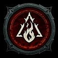

Zauberer
Ein elementarer Fernkämpfer, der Feuer, Frost und Blitz für Schaden, Kontrolle und spektakuläre Kettenreaktionen einsetzt.
- Kernressource
- Mana
- Klassenmechanik
- Verzauberungen
- Reichweite
- Fernkampf
- Schwerpunkt
- Feuer · Frost · Blitz
Spielweise
Mana speist mächtige Kernzauber, während Barrieren, Teleportation und Kontrolle Schutz schaffen. Im Verzauberungssystem werden ausgewählte Fertigkeiten zu passiven Effekten, die den gesamten Build prägen.
Stärken
Darauf solltest du achten
Mana und defensive Abklingzeiten bestimmen den Kampfrhythmus. Ohne Barrieren oder gute Positionierung hält die Klasse wenig aus.
Fertigkeitsfamilien
Feuer verursacht direkte Treffer und Verbrennung, Frost verlangsamt, friert ein und macht Gegner verwundbar, Blitz springt zwischen Zielen und belohnt hohe Angriffsgeschwindigkeit.
Typische Ausrichtungen
Feuerball, Feuerwand und Meteor kontrollieren Flächen; Eissplitter und Gefrorene Kugel spielen mit Einfrieren. Kettenblitz, Kugelblitz und Knisternde Energie erzeugen schnelle, mobile Blitz-Builds.
Verzauberungssystem
Zwei Fertigkeiten können in Verzauberungsplätze gesetzt werden. Dort werden sie nicht aktiv gewirkt, sondern erzeugen neue passive Effekte – etwa zusätzliche Explosionen, Beschwörungen oder elementare Reaktionen.
Für wen geeignet?
Für Spieler, die starke visuelle Elementarmagie, kontrollierte Distanz und viele kombinierbare Effekte bevorzugen.